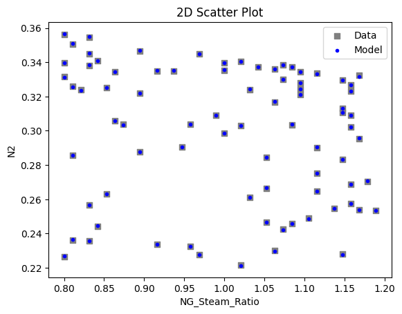
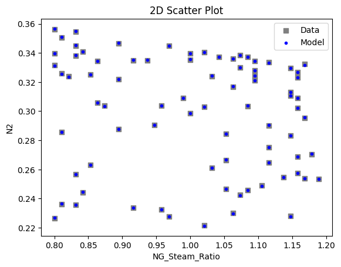
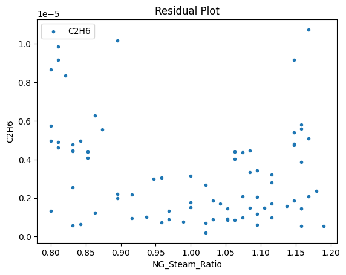
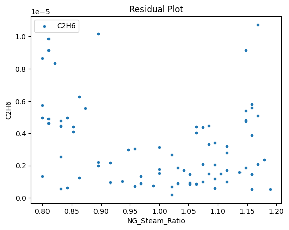
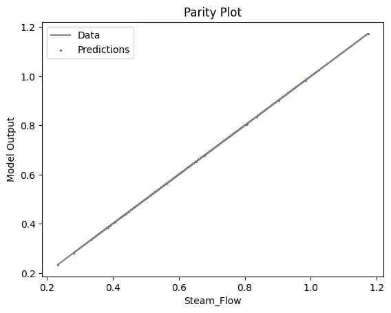
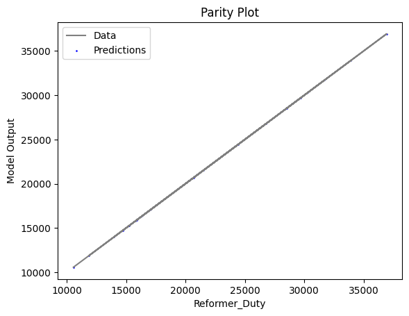
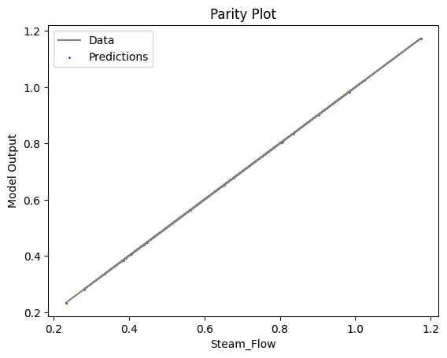
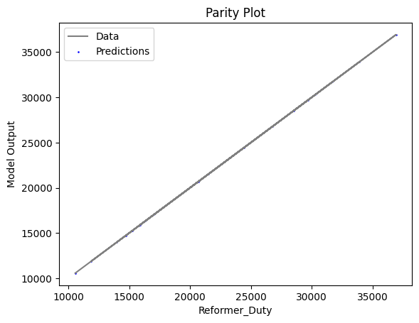

Autothermal Reformer Flowsheet Optimization with OMLT (TensorFlow Keras) Surrogate Object¶
1. Introduction¶
This example demonstrates autothermal reformer optimization leveraging the OMLT package utilizing TensorFlow Keras neural networks. In this notebook, sampled simulation data will be used to train and validate a surrogate model. IDAES surrogate plotting tools will be utilized to visualize the surrogates on training and validation data. Once validated, integration of the surrogate into an IDAES flowsheet will be demonstrated.
2. Problem Statement¶
Within the context of a larger NGFC system, the autothermal reformer generates syngas from air, steam and natural gas for use in a solid-oxide fuel cell (SOFC).
2.1. Main Inputs:¶
Bypass fraction (dimensionless) - split fraction of natural gas to bypass AR unit and feed directly to the power island
NG-Steam Ratio (dimensionless) - proportion of natural relative to steam fed into AR unit operation
2.2. Main Outputs:¶
Steam flowrate (kg/s) - inlet steam fed to AR unit
Reformer duty (kW) - required energy input to AR unit
Composition (dimensionless) - outlet mole fractions of components (Ar, C2H6, C3H8, C4H10, CH4, CO, CO2, H2, H2O, N2, O2)
from IPython.display import Image
Image("AR_PFD.png")

3. Training and Validating Surrogates¶
First, let’s import the required Python, Pyomo and IDAES modules:
# Import statements
import os
import numpy as np
import pandas as pd
import random as rn
import tensorflow as tf
# Import Pyomo libraries
from pyomo.environ import ConcreteModel, SolverFactory, value, Var, \
Constraint, Set, Objective, maximize
from pyomo.common.timing import TicTocTimer
# Import IDAES libraries
from idaes.core.surrogate.sampling.data_utils import split_training_validation
from idaes.core.surrogate.sampling.scaling import OffsetScaler
from idaes.core.surrogate.keras_surrogate import KerasSurrogate, save_keras_json_hd5, load_keras_json_hd5
from idaes.core.surrogate.plotting.sm_plotter import surrogate_scatter2D, surrogate_parity, surrogate_residual
from idaes.core.surrogate.surrogate_block import SurrogateBlock
from idaes.core import FlowsheetBlock
from idaes.core.util.convergence.convergence_base import _run_ipopt_with_stats
# fix environment variables to ensure consist neural network training
os.environ['PYTHONHASHSEED'] = '0'
os.environ['CUDA_VISIBLE_DEVICES'] = ''
np.random.seed(46)
rn.seed(1342)
tf.random.set_seed(62)
2022-09-13 00:39:16.321523: W tensorflow/stream_executor/platform/default/dso_loader.cc:64] Could not load dynamic library 'libcudart.so.11.0'; dlerror: libcudart.so.11.0: cannot open shared object file: No such file or directory
2022-09-13 00:39:16.321547: I tensorflow/stream_executor/cuda/cudart_stub.cc:29] Ignore above cudart dlerror if you do not have a GPU set up on your machine.
3.1 Importing Training and Validation Datasets¶
In this section, we read the dataset from the CSV file located in this
directory. 2800 data points were simulated from a rigorous IDAES NGFC
flowsheet using a grid sampling method. For simplicity and to reduce
training runtime, this example randomly selects 100 data points to use
for training/validation. The data is separated using an 80/20 split into
training and validation data using the IDAES
split_training_validation() method.
# Import Auto-reformer training data
np.set_printoptions(precision=6, suppress=True)
csv_data = pd.read_csv(r'reformer-data.csv') # 2800 data points
data = csv_data.sample(n = 100) # randomly sample points for training/validation
input_data = data.iloc[:, :2]
output_data = data.iloc[:, 2:]
# Define labels, and split training and validation data
input_labels = input_data.columns
output_labels = output_data.columns
n_data = data[input_labels[0]].size
data_training, data_validation = split_training_validation(data, 0.8, seed=n_data) # seed=100
3.2 Training Surrogates with TensorFlow Keras¶
TensorFlow Keras provides an interface to pass regression settings, build neural networks and train surrogate models. Keras enables the usage of two API formats: Sequential and Functional. While the Functional API offers more versatility including multiple input and output layers in a single neural network, the Sequential API is more stable and user-friendly. Further, the Sequnetial API integrates cleanly with existing IDAES surrogate tools and will be utilized in this example.
In the code below, we build the neural network structure based on our training data structure and desired regression settings. Offline, neural network models were trained for the list of settings below and the options bolded and italicized were determined to have the minimum mean squared error for the dataset:
Activation function: relu, sigmoid, tanh
Optimizer: Adam, RMSprop, SGD
Number of hidden layers: 1, 2, 4
Number of neurons per layer: 10, 20, 40
Typically, Sequential Keras models are built vertically; the dataset is scaled and normalized, and the network is defined for the input layer, hidden layers and output layer for the passed activation functions and network/layer sizes. Then, the model is compiled using the passed optimizer and trained using a desired number of epochs. Keras internally validates while training and updates the model weight (coefficient) values on each epoch.
Finally, after training the model we save the results and model expressions to a folder which contains a serialized JSON file. Serializing the model in this fashion enables importing a previously trained set of surrogate models into external flowsheets. This feature will be used later.
# capture long output (not required to use surrogate API)
from io import StringIO
import sys
stream = StringIO()
oldstdout = sys.stdout
sys.stdout = stream
# selected settings for regression (best fit from options above)
activation, optimizer, n_hidden_layers, n_nodes_per_layer = 'tanh', 'Adam', 2, 40
loss, metrics = 'mse', ['mae', 'mse']
# Create data objects for training using scalar normalization
n_inputs = len(input_labels)
n_outputs = len(output_labels)
x = input_data
y = output_data
input_scaler = None
output_scaler = None
input_scaler = OffsetScaler.create_normalizing_scaler(x)
output_scaler = OffsetScaler.create_normalizing_scaler(y)
x = input_scaler.scale(x)
y = output_scaler.scale(y)
x = x.to_numpy()
y = y.to_numpy()
# Create Keras Sequential object and build neural network
model = tf.keras.Sequential()
model.add(tf.keras.layers.Dense(units=n_nodes_per_layer, input_dim=n_inputs, activation=activation))
for i in range(1, n_hidden_layers):
model.add(tf.keras.layers.Dense(units=n_nodes_per_layer, activation=activation))
model.add(tf.keras.layers.Dense(units=n_outputs))
# Train surrogate (calls optimizer on neural network and solves for weights)
model.compile(loss=loss, optimizer=optimizer, metrics=metrics)
mcp_save = tf.keras.callbacks.ModelCheckpoint('.mdl_wts.hdf5', save_best_only=True, monitor='val_loss', mode='min')
history = model.fit(x=x, y=y, validation_split=0.2, verbose=1, epochs=1000, callbacks=[mcp_save])
# save model to JSON and create callable surrogate object
xmin, xmax = [0.1, 0.8], [0.8, 1.2]
input_bounds = {input_labels[i]: (xmin[i], xmax[i])
for i in range(len(input_labels))}
keras_surrogate = KerasSurrogate(model, input_labels=list(input_labels), output_labels=list(output_labels),
input_bounds=input_bounds, input_scaler=input_scaler, output_scaler=output_scaler)
keras_surrogate.save_to_folder('keras_surrogate')
# revert back to normal output capture
sys.stdout = oldstdout
# display first 50 lines and last 50 lines of output
celloutput = stream.getvalue().split('\n')
for line in celloutput[:50]:
print(line)
print('.')
print('.')
print('.')
for line in celloutput[-50:]:
print(line)
2022-09-13 00:39:18.672419: W tensorflow/stream_executor/platform/default/dso_loader.cc:64] Could not load dynamic library 'libcuda.so.1'; dlerror: libcuda.so.1: cannot open shared object file: No such file or directory; LD_LIBRARY_PATH: :/home/runner/.idaes/bin
2022-09-13 00:39:18.672438: W tensorflow/stream_executor/cuda/cuda_driver.cc:269] failed call to cuInit: UNKNOWN ERROR (303)
2022-09-13 00:39:18.672468: I tensorflow/stream_executor/cuda/cuda_diagnostics.cc:156] kernel driver does not appear to be running on this host (b8fc685b9dc9): /proc/driver/nvidia/version does not exist
2022-09-13 00:39:18.672660: I tensorflow/core/platform/cpu_feature_guard.cc:151] This TensorFlow binary is optimized with oneAPI Deep Neural Network Library (oneDNN) to use the following CPU instructions in performance-critical operations: AVX2 AVX512F FMA
To enable them in other operations, rebuild TensorFlow with the appropriate compiler flags.
2022-09-13 00:39:40.842168: W tensorflow/python/util/util.cc:368] Sets are not currently considered sequences, but this may change in the future, so consider avoiding using them.
INFO:tensorflow:Assets written to: keras_surrogate/assets
Epoch 1/1000
3/3 [==============================] - 0s 59ms/step - loss: 0.3379 - mae: 0.4802 - mse: 0.3379 - val_loss: 0.3419 - val_mae: 0.4766 - val_mse: 0.3419
Epoch 2/1000
3/3 [==============================] - 0s 13ms/step - loss: 0.2887 - mae: 0.4419 - mse: 0.2887 - val_loss: 0.2913 - val_mae: 0.4381 - val_mse: 0.2913
Epoch 3/1000
3/3 [==============================] - 0s 13ms/step - loss: 0.2463 - mae: 0.4057 - mse: 0.2463 - val_loss: 0.2468 - val_mae: 0.4013 - val_mse: 0.2468
Epoch 4/1000
3/3 [==============================] - 0s 13ms/step - loss: 0.2102 - mae: 0.3713 - mse: 0.2102 - val_loss: 0.2083 - val_mae: 0.3665 - val_mse: 0.2083
Epoch 5/1000
3/3 [==============================] - 0s 14ms/step - loss: 0.1784 - mae: 0.3389 - mse: 0.1784 - val_loss: 0.1754 - val_mae: 0.3342 - val_mse: 0.1754
Epoch 6/1000
3/3 [==============================] - 0s 14ms/step - loss: 0.1521 - mae: 0.3097 - mse: 0.1521 - val_loss: 0.1466 - val_mae: 0.3036 - val_mse: 0.1466
Epoch 7/1000
3/3 [==============================] - 0s 13ms/step - loss: 0.1294 - mae: 0.2835 - mse: 0.1294 - val_loss: 0.1228 - val_mae: 0.2767 - val_mse: 0.1228
Epoch 8/1000
3/3 [==============================] - 0s 13ms/step - loss: 0.1112 - mae: 0.2616 - mse: 0.1112 - val_loss: 0.1028 - val_mae: 0.2523 - val_mse: 0.1028
Epoch 9/1000
3/3 [==============================] - 0s 13ms/step - loss: 0.0961 - mae: 0.2442 - mse: 0.0961 - val_loss: 0.0867 - val_mae: 0.2312 - val_mse: 0.0867
Epoch 10/1000
3/3 [==============================] - 0s 13ms/step - loss: 0.0848 - mae: 0.2298 - mse: 0.0848 - val_loss: 0.0741 - val_mae: 0.2138 - val_mse: 0.0741
Epoch 11/1000
3/3 [==============================] - 0s 13ms/step - loss: 0.0759 - mae: 0.2179 - mse: 0.0759 - val_loss: 0.0643 - val_mae: 0.2000 - val_mse: 0.0643
Epoch 12/1000
3/3 [==============================] - 0s 13ms/step - loss: 0.0699 - mae: 0.2085 - mse: 0.0699 - val_loss: 0.0568 - val_mae: 0.1887 - val_mse: 0.0568
Epoch 13/1000
3/3 [==============================] - 0s 14ms/step - loss: 0.0645 - mae: 0.1996 - mse: 0.0645 - val_loss: 0.0519 - val_mae: 0.1808 - val_mse: 0.0519
Epoch 14/1000
3/3 [==============================] - 0s 13ms/step - loss: 0.0606 - mae: 0.1927 - mse: 0.0606 - val_loss: 0.0478 - val_mae: 0.1731 - val_mse: 0.0478
Epoch 15/1000
3/3 [==============================] - 0s 13ms/step - loss: 0.0573 - mae: 0.1862 - mse: 0.0573 - val_loss: 0.0445 - val_mae: 0.1664 - val_mse: 0.0445
Epoch 16/1000
3/3 [==============================] - 0s 13ms/step - loss: 0.0542 - mae: 0.1790 - mse: 0.0542 - val_loss: 0.0413 - val_mae: 0.1589 - val_mse: 0.0413
Epoch 17/1000
3/3 [==============================] - 0s 13ms/step - loss: 0.0512 - mae: 0.1716 - mse: 0.0512 - val_loss: 0.0390 - val_mae: 0.1529 - val_mse: 0.0390
Epoch 18/1000
3/3 [==============================] - 0s 13ms/step - loss: 0.0484 - mae: 0.1650 - mse: 0.0484 - val_loss: 0.0373 - val_mae: 0.1476 - val_mse: 0.0373
Epoch 19/1000
3/3 [==============================] - 0s 13ms/step - loss: 0.0458 - mae: 0.1588 - mse: 0.0458 - val_loss: 0.0355 - val_mae: 0.1425 - val_mse: 0.0355
Epoch 20/1000
3/3 [==============================] - 0s 14ms/step - loss: 0.0435 - mae: 0.1535 - mse: 0.0435 - val_loss: 0.0341 - val_mae: 0.1380 - val_mse: 0.0341
Epoch 21/1000
3/3 [==============================] - 0s 13ms/step - loss: 0.0415 - mae: 0.1488 - mse: 0.0415 - val_loss: 0.0324 - val_mae: 0.1332 - val_mse: 0.0324
Epoch 22/1000
3/3 [==============================] - 0s 14ms/step - loss: 0.0396 - mae: 0.1442 - mse: 0.0396 - val_loss: 0.0310 - val_mae: 0.1292 - val_mse: 0.0310
Epoch 23/1000
3/3 [==============================] - 0s 13ms/step - loss: 0.0380 - mae: 0.1405 - mse: 0.0380 - val_loss: 0.0300 - val_mae: 0.1267 - val_mse: 0.0300
Epoch 24/1000
3/3 [==============================] - 0s 13ms/step - loss: 0.0363 - mae: 0.1370 - mse: 0.0363 - val_loss: 0.0288 - val_mae: 0.1239 - val_mse: 0.0288
Epoch 25/1000
3/3 [==============================] - 0s 13ms/step - loss: 0.0348 - mae: 0.1336 - mse: 0.0348 - val_loss: 0.0275 - val_mae: 0.1214 - val_mse: 0.0275
.
.
.
3/3 [==============================] - 0s 9ms/step - loss: 6.9354e-05 - mae: 0.0060 - mse: 6.9354e-05 - val_loss: 5.8246e-05 - val_mae: 0.0058 - val_mse: 5.8246e-05
Epoch 977/1000
3/3 [==============================] - 0s 13ms/step - loss: 6.6983e-05 - mae: 0.0061 - mse: 6.6983e-05 - val_loss: 4.7223e-05 - val_mae: 0.0051 - val_mse: 4.7223e-05
Epoch 978/1000
3/3 [==============================] - 0s 9ms/step - loss: 6.8912e-05 - mae: 0.0062 - mse: 6.8912e-05 - val_loss: 6.4391e-05 - val_mae: 0.0063 - val_mse: 6.4391e-05
Epoch 979/1000
3/3 [==============================] - 0s 9ms/step - loss: 6.9079e-05 - mae: 0.0063 - mse: 6.9079e-05 - val_loss: 5.0219e-05 - val_mae: 0.0053 - val_mse: 5.0219e-05
Epoch 980/1000
3/3 [==============================] - 0s 10ms/step - loss: 6.3252e-05 - mae: 0.0059 - mse: 6.3252e-05 - val_loss: 5.8465e-05 - val_mae: 0.0058 - val_mse: 5.8465e-05
Epoch 981/1000
3/3 [==============================] - 0s 9ms/step - loss: 6.4931e-05 - mae: 0.0058 - mse: 6.4931e-05 - val_loss: 5.2877e-05 - val_mae: 0.0053 - val_mse: 5.2877e-05
Epoch 982/1000
3/3 [==============================] - 0s 9ms/step - loss: 6.4473e-05 - mae: 0.0059 - mse: 6.4473e-05 - val_loss: 5.2459e-05 - val_mae: 0.0054 - val_mse: 5.2459e-05
Epoch 983/1000
3/3 [==============================] - 0s 9ms/step - loss: 6.2660e-05 - mae: 0.0060 - mse: 6.2660e-05 - val_loss: 5.5159e-05 - val_mae: 0.0057 - val_mse: 5.5159e-05
Epoch 984/1000
3/3 [==============================] - 0s 9ms/step - loss: 6.3246e-05 - mae: 0.0059 - mse: 6.3246e-05 - val_loss: 5.2100e-05 - val_mae: 0.0054 - val_mse: 5.2100e-05
Epoch 985/1000
3/3 [==============================] - 0s 14ms/step - loss: 6.3528e-05 - mae: 0.0059 - mse: 6.3528e-05 - val_loss: 4.6852e-05 - val_mae: 0.0051 - val_mse: 4.6852e-05
Epoch 986/1000
3/3 [==============================] - 0s 9ms/step - loss: 6.5850e-05 - mae: 0.0060 - mse: 6.5850e-05 - val_loss: 5.0572e-05 - val_mae: 0.0054 - val_mse: 5.0572e-05
Epoch 987/1000
3/3 [==============================] - 0s 9ms/step - loss: 6.5538e-05 - mae: 0.0060 - mse: 6.5538e-05 - val_loss: 5.3238e-05 - val_mae: 0.0056 - val_mse: 5.3238e-05
Epoch 988/1000
3/3 [==============================] - 0s 8ms/step - loss: 6.2496e-05 - mae: 0.0059 - mse: 6.2496e-05 - val_loss: 4.8342e-05 - val_mae: 0.0051 - val_mse: 4.8342e-05
Epoch 989/1000
3/3 [==============================] - 0s 9ms/step - loss: 6.2952e-05 - mae: 0.0059 - mse: 6.2952e-05 - val_loss: 5.7003e-05 - val_mae: 0.0058 - val_mse: 5.7003e-05
Epoch 990/1000
3/3 [==============================] - 0s 9ms/step - loss: 6.3259e-05 - mae: 0.0060 - mse: 6.3259e-05 - val_loss: 4.9034e-05 - val_mae: 0.0051 - val_mse: 4.9034e-05
Epoch 991/1000
3/3 [==============================] - 0s 9ms/step - loss: 6.1048e-05 - mae: 0.0057 - mse: 6.1048e-05 - val_loss: 5.4720e-05 - val_mae: 0.0056 - val_mse: 5.4720e-05
Epoch 992/1000
3/3 [==============================] - 0s 9ms/step - loss: 6.1257e-05 - mae: 0.0058 - mse: 6.1257e-05 - val_loss: 4.9662e-05 - val_mae: 0.0052 - val_mse: 4.9662e-05
Epoch 993/1000
3/3 [==============================] - 0s 9ms/step - loss: 6.0642e-05 - mae: 0.0058 - mse: 6.0642e-05 - val_loss: 5.0559e-05 - val_mae: 0.0053 - val_mse: 5.0559e-05
Epoch 994/1000
3/3 [==============================] - 0s 9ms/step - loss: 6.1192e-05 - mae: 0.0059 - mse: 6.1192e-05 - val_loss: 5.2481e-05 - val_mae: 0.0055 - val_mse: 5.2481e-05
Epoch 995/1000
3/3 [==============================] - 0s 9ms/step - loss: 6.0773e-05 - mae: 0.0058 - mse: 6.0773e-05 - val_loss: 5.0426e-05 - val_mae: 0.0052 - val_mse: 5.0426e-05
Epoch 996/1000
3/3 [==============================] - 0s 9ms/step - loss: 5.9497e-05 - mae: 0.0056 - mse: 5.9497e-05 - val_loss: 5.6944e-05 - val_mae: 0.0057 - val_mse: 5.6944e-05
Epoch 997/1000
3/3 [==============================] - 0s 9ms/step - loss: 6.0856e-05 - mae: 0.0057 - mse: 6.0856e-05 - val_loss: 4.9430e-05 - val_mae: 0.0052 - val_mse: 4.9430e-05
Epoch 998/1000
3/3 [==============================] - 0s 9ms/step - loss: 6.2141e-05 - mae: 0.0058 - mse: 6.2141e-05 - val_loss: 5.1473e-05 - val_mae: 0.0054 - val_mse: 5.1473e-05
Epoch 999/1000
3/3 [==============================] - 0s 9ms/step - loss: 6.4143e-05 - mae: 0.0060 - mse: 6.4143e-05 - val_loss: 4.8490e-05 - val_mae: 0.0051 - val_mse: 4.8490e-05
Epoch 1000/1000
3/3 [==============================] - 0s 9ms/step - loss: 6.2374e-05 - mae: 0.0060 - mse: 6.2374e-05 - val_loss: 5.2935e-05 - val_mae: 0.0056 - val_mse: 5.2935e-05
3.3 Visualizing surrogates¶
Now that the surrogate models have been trained, the models can be visualized through scatter, parity and residual plots to confirm their validity in the chosen domain. The training data will be visualized first to confirm the surrogates are fit the data, and then the validation data will be visualized to confirm the surrogates accurately predict new output values.
# visualize with IDAES surrogate plotting tools
surrogate_scatter2D(keras_surrogate, data_training, filename='keras_train_scatter2D.pdf')
surrogate_parity(keras_surrogate, data_training, filename='keras_train_parity.pdf')
surrogate_residual(keras_surrogate, data_training, filename='keras_train_residual.pdf')

 


 

3.4 Model Validation¶
# visualize with IDAES surrogate plotting tools
surrogate_scatter2D(keras_surrogate, data_validation, filename='keras_val_scatter2D.pdf')
surrogate_parity(keras_surrogate, data_validation, filename='keras_val_parity.pdf')
surrogate_residual(keras_surrogate, data_validation, filename='keras_val_residual.pdf')

 




4. IDAES Flowsheet Integration¶
4.1 Build and Run IDAES Flowsheet¶
Next, we will build an IDAES flowsheet and import the surrogate model object. A single Keras neural network model accounts for all input and output variables, and the JSON model serialized earlier may be imported into a single SurrogateBlock() component.
# create the IDAES model and flowsheet
m = ConcreteModel()
m.fs = FlowsheetBlock(default={"dynamic": False})
# create flowsheet input variables
m.fs.bypass_frac = Var(initialize=0.80, bounds=[0.1, 0.8], doc='natural gas bypass fraction')
m.fs.ng_steam_ratio = Var(initialize=0.80, bounds=[0.8, 1.2], doc='natural gas to steam ratio')
# create flowsheet output variables
m.fs.steam_flowrate = Var(initialize=0.2, doc="steam flowrate")
m.fs.reformer_duty = Var(initialize=10000, doc="reformer heat duty")
m.fs.AR = Var(initialize=0, doc="AR fraction")
m.fs.C2H6 = Var(initialize=0, doc="C2H6 fraction")
m.fs.C3H8 = Var(initialize=0, doc="C3H8 fraction")
m.fs.C4H10 = Var(initialize=0, doc="C4H10 fraction")
m.fs.CH4 = Var(initialize=0, doc="CH4 fraction")
m.fs.CO = Var(initialize=0, doc="CO fraction")
m.fs.CO2 = Var(initialize=0, doc="CO2 fraction")
m.fs.H2 = Var(initialize=0, doc="H2 fraction")
m.fs.H2O = Var(initialize=0, doc="H2O fraction")
m.fs.N2 = Var(initialize=0, doc="N2 fraction")
m.fs.O2 = Var(initialize=0, doc="O2 fraction")
# create input and output variable object lists for flowsheet
inputs = [m.fs.bypass_frac, m.fs.ng_steam_ratio]
outputs = [m.fs.steam_flowrate, m.fs.reformer_duty, m.fs.AR, m.fs.C2H6, m.fs.C4H10,
m.fs.C3H8, m.fs.CH4, m.fs.CO, m.fs.CO2, m.fs.H2, m.fs.H2O, m.fs.N2, m.fs.O2]
# create the Pyomo/IDAES block that corresponds to the surrogate
# Keras
keras_surrogate = KerasSurrogate.load_from_folder('keras_surrogate')
m.fs.surrogate = SurrogateBlock()
m.fs.surrogate.build_model(keras_surrogate,
formulation=KerasSurrogate.Formulation.FULL_SPACE,
input_vars=inputs, output_vars=outputs)
# fix input values and solve flowsheet
m.fs.bypass_frac.fix(0.5)
m.fs.ng_steam_ratio.fix(1)
solver = SolverFactory('ipopt')
[status_obj, solved, iters, time] = _run_ipopt_with_stats(m, solver)
WARNING: DEPRECATED: The default argument for the ProcessBlock class is
deprecated. Arguments can now be passed directly as keyword arguments.
(called from /tmp/ipykernel_58035/1878497891.py:3)
Setting bound of fs.bypass_frac to (0.1, 0.8).
Setting bound of fs.ng_steam_ratio to (0.8, 1.2).
Ipopt 3.13.2: output_file=/tmp/tmpwu9i2uk2ipopt_out
max_iter=500
max_cpu_time=120
**************************************************************************
This program contains Ipopt, a library for large-scale nonlinear optimization.
Ipopt is released as open source code under the Eclipse Public License (EPL).
For more information visit http://projects.coin-or.org/Ipopt
This version of Ipopt was compiled from source code available at
https://github.com/IDAES/Ipopt as part of the Institute for the Design of
Advanced Energy Systems Process Systems Engineering Framework (IDAES PSE
Framework) Copyright (c) 2018-2019. See https://github.com/IDAES/idaes-pse.
This version of Ipopt was compiled using HSL, a collection of Fortran codes
for large-scale scientific computation. All technical papers, sales and
publicity material resulting from use of the HSL codes within IPOPT must
contain the following acknowledgement:
HSL, a collection of Fortran codes for large-scale scientific
computation. See http://www.hsl.rl.ac.uk.
**************************************************************************
This is Ipopt version 3.13.2, running with linear solver ma27.
Number of nonzeros in equality constraint Jacobian...: 2537
Number of nonzeros in inequality constraint Jacobian.: 0
Number of nonzeros in Lagrangian Hessian.............: 80
Total number of variables............................: 216
variables with only lower bounds: 0
variables with lower and upper bounds: 4
variables with only upper bounds: 0
Total number of equality constraints.................: 216
Total number of inequality constraints...............: 0
inequality constraints with only lower bounds: 0
inequality constraints with lower and upper bounds: 0
inequality constraints with only upper bounds: 0
iter objective inf_pr inf_du lg(mu) ||d|| lg(rg) alpha_du alpha_pr ls
0 0.0000000e+00 1.91e+02 0.00e+00 -1.0 0.00e+00 - 0.00e+00 0.00e+00 0
1 0.0000000e+00 5.99e-01 4.65e+01 -1.7 1.06e+04 - 2.06e-02 1.00e+00f 1
2 0.0000000e+00 3.05e-04 1.41e-14 -1.7 4.50e+02 - 1.00e+00 1.00e+00h 1
3 0.0000000e+00 1.82e-12 5.42e-19 -3.8 5.25e+00 - 1.00e+00 1.00e+00h 1
Number of Iterations....: 3
(scaled) (unscaled)
Objective...............: 0.0000000000000000e+00 0.0000000000000000e+00
Dual infeasibility......: 0.0000000000000000e+00 0.0000000000000000e+00
Constraint violation....: 6.0616859024126514e-15 1.8189894035458565e-12
Complementarity.........: 0.0000000000000000e+00 0.0000000000000000e+00
Overall NLP error.......: 6.0616859024126514e-15 1.8189894035458565e-12
Number of objective function evaluations = 4
Number of objective gradient evaluations = 4
Number of equality constraint evaluations = 4
Number of inequality constraint evaluations = 0
Number of equality constraint Jacobian evaluations = 4
Number of inequality constraint Jacobian evaluations = 0
Number of Lagrangian Hessian evaluations = 3
Total CPU secs in IPOPT (w/o function evaluations) = 0.009
Total CPU secs in NLP function evaluations = 0.000
EXIT: Optimal Solution Found.
Let’s print some model results:
print("Model status: ", status_obj)
print("Solution optimal: ", solved)
print("IPOPT iterations: ", iters)
print("IPOPT runtime: ", time)
print()
print("Steam flowrate = ", value(m.fs.steam_flowrate))
print("Reformer duty = ", value(m.fs.reformer_duty))
print("Mole Fraction Ar = ", value(m.fs.AR))
print("Mole Fraction C2H6 = ", value(m.fs.C2H6))
print("Mole Fraction C3H8 = ", value(m.fs.C3H8))
print("Mole Fraction C4H10 = ", value(m.fs.C4H10))
print("Mole Fraction CH4 = ", value(m.fs.CH4))
print("Mole Fraction CO = ", value(m.fs.CO))
print("Mole Fraction CO2 = ", value(m.fs.CO2))
print("Mole Fraction H2 = ", value(m.fs.H2))
print("Mole Fraction H2O = ", value(m.fs.H2O))
print("Mole Fraction N2 = ", value(m.fs.N2))
print("Mole Fraction O2 = ", value(m.fs.O2))
Model status: Problem: - Lower bound: -inf Upper bound: inf Number of objectives: 1 Number of constraints: 216 Number of variables: 216 Sense: unknown Solver: - Status: ok Message: Ipopt 3.13.2x3a Optimal Solution Found Termination condition: optimal Id: 0 Error rc: 0 Time: 0.03573775291442871 Solution: - number of solutions: 0 number of solutions displayed: 0 Solution optimal: True IPOPT iterations: 3 IPOPT runtime: 0.009 Steam flowrate = 0.6025537736432728 Reformer duty = 21092.251490006434 Mole Fraction Ar = 0.0036867301082682564 Mole Fraction C2H6 = 0.004162571765411532 Mole Fraction C3H8 = 0.0005193975838271344 Mole Fraction C4H10 = 0.0009099711562209136 Mole Fraction CH4 = 0.1270002790398914 Mole Fraction CO = 0.09713688146189205 Mole Fraction CO2 = 0.04606993297444343 Mole Fraction H2 = 0.2945343856680218 Mole Fraction H2O = 0.12007171307844378 Mole Fraction N2 = 0.30749910458715063 Mole Fraction O2 = 2.4929456019673484e-20
4.2 Optimizing the Autothermal Reformer¶
Extending this example, we will unfix the input variables and optimize hydrogen production. We will restrict nitrogen below 34 mol% of the product stream and leave all other variables unfixed.
Above, variable values are called in reference to actual objects names; however, as shown below this may be done much more compactly by calling the list objects we created earlier.
# unfix input values and add the objective/constraint to the model
m.fs.bypass_frac.unfix()
m.fs.ng_steam_ratio.unfix()
m.fs.obj = Objective(expr=m.fs.H2, sense=maximize)
m.fs.con = Constraint(expr=m.fs.N2 <= 0.34)
# solve the model
tmr = TicTocTimer()
status = solver.solve(m, tee=True)
solve_time = tmr.toc('solve')
# print and check results
assert abs(value(m.fs.H2)-0.33) <= 0.01
assert value(m.fs.N2 <= 0.4+1e-8)
print('Model status: ', status)
print('Solve time: ', solve_time)
for var in inputs:
print(var.name,': ', value(var))
for var in outputs:
print(var.name,': ', value(var))
Ipopt 3.13.2:
**************************************************************************
This program contains Ipopt, a library for large-scale nonlinear optimization.
Ipopt is released as open source code under the Eclipse Public License (EPL).
For more information visit http://projects.coin-or.org/Ipopt
This version of Ipopt was compiled from source code available at
https://github.com/IDAES/Ipopt as part of the Institute for the Design of
Advanced Energy Systems Process Systems Engineering Framework (IDAES PSE
Framework) Copyright (c) 2018-2019. See https://github.com/IDAES/idaes-pse.
This version of Ipopt was compiled using HSL, a collection of Fortran codes
for large-scale scientific computation. All technical papers, sales and
publicity material resulting from use of the HSL codes within IPOPT must
contain the following acknowledgement:
HSL, a collection of Fortran codes for large-scale scientific
computation. See http://www.hsl.rl.ac.uk.
**************************************************************************
This is Ipopt version 3.13.2, running with linear solver ma27.
Number of nonzeros in equality constraint Jacobian...: 2539
Number of nonzeros in inequality constraint Jacobian.: 1
Number of nonzeros in Lagrangian Hessian.............: 80
Total number of variables............................: 218
variables with only lower bounds: 0
variables with lower and upper bounds: 6
variables with only upper bounds: 0
Total number of equality constraints.................: 216
Total number of inequality constraints...............: 1
inequality constraints with only lower bounds: 0
inequality constraints with lower and upper bounds: 0
inequality constraints with only upper bounds: 1
iter objective inf_pr inf_du lg(mu) ||d|| lg(rg) alpha_du alpha_pr ls
0 -2.9453439e-01 1.82e-12 8.96e-04 -1.0 0.00e+00 - 0.00e+00 0.00e+00 0
1 -2.9527384e-01 9.27e-05 9.29e-05 -1.7 1.93e+02 - 1.00e+00 1.00e+00f 1
2 -3.1026999e-01 2.95e-02 7.63e-02 -3.8 3.93e+03 - 7.68e-01 1.00e+00h 1
3 -3.2622219e-01 2.64e-02 1.75e-03 -3.8 6.28e+03 - 1.00e+00 1.00e+00h 1
4 -3.3272310e-01 3.75e-02 2.65e-03 -3.8 7.25e+03 - 1.00e+00 1.00e+00h 1
5 -3.3167012e-01 8.00e-04 8.53e-05 -3.8 1.08e+03 - 1.00e+00 1.00e+00h 1
6 -3.3224221e-01 7.53e-05 3.85e-04 -5.7 3.62e+02 - 9.97e-01 9.88e-01h 1
7 -3.3224934e-01 5.83e-07 3.01e-01 -5.7 2.62e+01 - 4.73e-02 1.00e+00f 1
8 -3.3224955e-01 4.70e-11 1.84e-11 -5.7 1.70e-01 - 1.00e+00 1.00e+00h 1
9 -3.3225692e-01 8.10e-09 3.31e-09 -8.6 3.94e+00 - 1.00e+00 1.00e+00h 1
Number of Iterations....: 9
(scaled) (unscaled)
Objective...............: -3.3225691617257724e-01 -3.3225691617257724e-01
Dual infeasibility......: 3.3110479618486677e-09 3.3110479618486677e-09
Constraint violation....: 8.1015084640867485e-09 8.1015084640867485e-09
Complementarity.........: 7.4193749898494133e-09 7.4193749898494133e-09
Overall NLP error.......: 8.1015084640867485e-09 8.1015084640867485e-09
Number of objective function evaluations = 10
Number of objective gradient evaluations = 10
Number of equality constraint evaluations = 10
Number of inequality constraint evaluations = 10
Number of equality constraint Jacobian evaluations = 10
Number of inequality constraint Jacobian evaluations = 10
Number of Lagrangian Hessian evaluations = 9
Total CPU secs in IPOPT (w/o function evaluations) = 0.017
Total CPU secs in NLP function evaluations = 0.000
EXIT: Optimal Solution Found.
[+ 0.05] solve
Model status:
Problem:
- Lower bound: -inf
Upper bound: inf
Number of objectives: 1
Number of constraints: 217
Number of variables: 218
Sense: unknown
Solver:
- Status: ok
Message: Ipopt 3.13.2x3a Optimal Solution Found
Termination condition: optimal
Id: 0
Error rc: 0
Time: 0.03509092330932617
Solution:
- number of solutions: 0
number of solutions displayed: 0
Solve time: 0.0497940257191658
fs.bypass_frac : 0.10000008923687335
fs.ng_steam_ratio : 1.115032047706373
fs.steam_flowrate : 1.1908259677130308
fs.reformer_duty : 38000.78300771216
fs.AR : 0.004117816676164896
fs.C2H6 : 0.00039245317189518533
fs.C4H10 : 9.924275391673383e-05
fs.C3H8 : 5.0809777566927445e-05
fs.CH4 : 0.013402467088361814
fs.CO : 0.10559082517211132
fs.CO2 : 0.05318968222549903
fs.H2 : 0.33225691617257724
fs.H2O : 0.1484328929024892
fs.N2 : 0.33999998519831615
fs.O2 : 3.381815092780054e-20